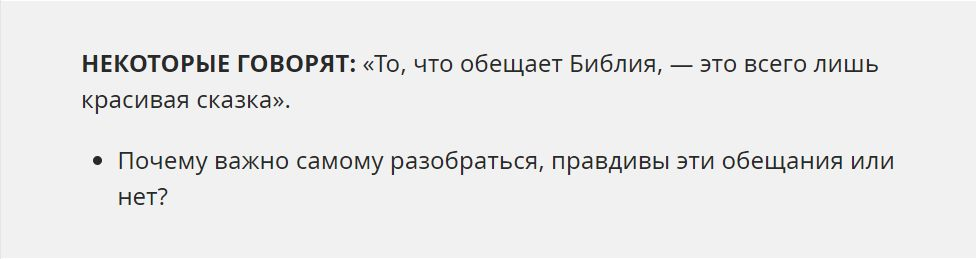

Библия даёт надежду
Урок 02
Библия даёт надежду
Сегодня жизнь людей по всему миру полна проблем, стресса, беспокойств и слёз. Возможно, в вашей жизни тоже есть что-то, что вас расстраивает. Может, вы заболели или потеряли кого-то из близких, и у вас возникает вопрос: «Жизнь когда-нибудь станет лучше?» Ответ из Библии вас приятно удивит.
1. Какую надежду даёт Библия?
Библия не только объясняет, почему в мире столько проблем, но и сообщает хорошую новость о том, что эти проблемы временные и скоро их не будет. Библейские обещания могут дать вам будущее и надежду. (Прочитайте Иеремия 29:11, 12). Эти обещания помогают нам быть счастливыми уже сейчас, несмотря на проблемы, и дают твёрдую надежду на то, что нас ждёт хорошее будущее.
2. Каким будет будущее, согласно Библии?
В Библии говорится, что в будущем «Больше не будет ни смерти, ни скорби, ни вопля, ни болезни, потому что прежнее прошло». (Прочитайте Откровение 21:4). Проблемы, которые нам сегодня кажутся безвыходными, например бедность, несправедливость, болезни и смерть, навсегда уйдут в прошлое. Библия обещает, что люди будут жить в раю на земле вечно.
3. Как убедиться, что обещания Библии исполнятся?
Многие люди надеются на что-то хорошее. Но у них нет никаких гарантий, что эти надежды исполнятся. Однако с библейскими обещаниями всё по-другому. Вы в этом убедитесь, если будете усердно исследовать Библию (Деяния 17:11). Во время этого курса вы сможете понять для себя, стоит ли верить библейским обещаниям.
Копните глубже
Посмотрите, что в Библии говорится о будущем. Узнайте, как надежда из Библии помогает людям уже сегодня.
4. Библия обещает вечную жизнь в самых лучших условиях!
Ниже перечислены некоторые обещания из Библии. Какое из них вам особенно нравится? Почему?
Прочитайте библейские стихи, которые приводятся рядом с каждым обещанием, и ответьте:
• Чувствуете ли вы, что вам нужна такая надежда? Нуждаются ли в ней ваши родственники и друзья?
Представьте себе жизнь в таких условиях:
ЧЕГО НЕ БУДЕТ:
Боли, старости и смерти (Исайя 25:8).
Болезней, физических недостатков и травм (Исайя 33:24; 35:5, 6).
Несправедливости (Исайя 32:16, 17).
Войн и их ужасных последствий (Псалом 45:10).
Тяжёлых мыслей и горьких воспоминаний (Исайя 65:17).
ЧТО БУДЕТ:
Умершие воскреснут, чтобы снова жить на земле (Иоанна 5:28, 29).
Все будут молоды и полны сил (Иов 33:25).
У всех будет достаточно еды, комфортное жильё и интересная работа (Псалом 71:16; Исайя 65:21, 22).
Мир, гармония и безопасность (Псалом 36:11).
Вечная жизнь в самых лучших условиях (Псалом 36:29).
5. Библейская надежда помогает по-другому взглянуть на проблемы
Многих людей огорчает и даже злит то, что происходит в мире. Некоторые пытаются как-то изменить ситуацию. Библейское обещание о лучшем будущем помогает людям уже сегодня. Они помогают преодолевать уныние и быть счастливым, несмотря на проблемы.
Прочитайте: Притчи 17:22 и Римлянам 12:12 и ответьте:
• Если вы поверите в то, о чем говорится в Библии, станет ли ваша жизнь от этого лучше? Почему?

Главная мысль
Библия даёт надежду и уже сейчас помогает по-другому смотреть на проблемы.
Повторение
• Почему людям важно узнать о том, что обещает Библия?
• Что в Библии говорится о будущем?
• Как надежда из Библии может помочь вам уже сейчас?
Перейдите по ссылке, чтобы узнать почему можно доверять Библии.
Следующий урок: Можно ли верить Библии?
Информация для читателей⛔
Настоящие материалы предоставляются на безвозмездной основе в рамках реализации права на свободу совести, убеждений и неприкосновенность личной информационной жизни. Доступ по прямой ссылке организован исключительно для удовлетворения индивидуальных культурно-просветительских и духовных потребностей читателя.
‼️Проект уважает конфиденциальность вашей частной жизни и не осуществляет публичного распространения или коммерческого использования материалов. По любым вопросам, связанным с соблюдением авторских прав или доступом к текстам, вы можете обратиться по адресу: ilyamironu@mail.ru.